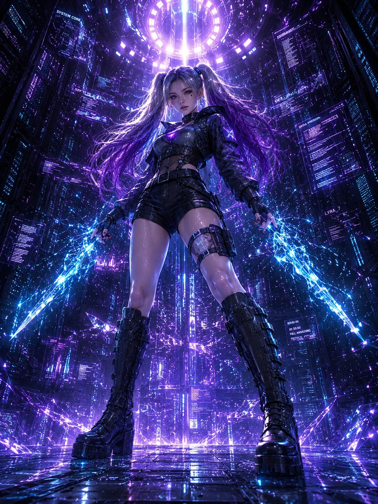

Aim and drop. Two of the same orb merge into the next tier. Don't let the jar overflow.조준하고 떨어뜨리세요. 같은 구슬 두 개가 만나면 다음 단계로 합쳐집니다. 병이 넘치지 않게 하세요.
SCORE점수0
NEXT다음
BEST최고 0
OVERRIDE오버라이드 ×0
ZENA SKILLS제나 기술
Merging two XENA orbs creates an OVERRIDE orb — the top tier. Every OVERRIDE orb created adds +1 charge (shown above).XENA 구슬 2개를 합치면 최상위 티어 OVERRIDE 구슬이 만들어집니다. OVERRIDE 구슬을 만들 때마다 충전이 +1 됩니다 (위에 표시).
FREEZE FLOOR바닥 정지 — costs 1 charge. Freezes the rising floor for 3 seconds.충전 1 소모. 차오르는 바닥을 3초간 멈춥니다.
PUSH BACK FLOOR바닥 밀어내기 — costs 2 charge. The slowly rising floor is pushed back down for breathing room.충전 2 소모. 서서히 차오르는 바닥을 다시 밀어내려 여유 공간을 만듭니다.
CLEAR OVERRIDE ×4오버라이드 정리 ×4 — costs 3 charge. Removes up to 4 OVERRIDE orbs sitting in the jar (they never merge further, so they can clog it) and grants bonus score.충전 3 소모. 더 이상 합쳐지지 않아 병을 막고 있는 OVERRIDE 구슬을 최대 4개까지 제거하고 보너스 점수를 얻습니다.

XENA MERGEXENA MERGE
Tap/click to aim, release to drop.탭/클릭으로 조준하고 놓으면 떨어집니다.
JAR OVERFLOW병이 넘쳤습니다
C
Daily reward (up to 3 runs) · S rank +120 XC · A +60 XC · B +28 XC · C +10 XC · D no reward Weekly top 3 displayed at game over · global leaderboard updates each run일일 보상 최대 3판 · S등급 +120 XC · A등급 +60 XC · B등급 +28 XC · C등급 +10 XC · D등급 보상 없음 게임오버 화면에서 이번주 랭킹 TOP 3 확인 · 매 판 종료 시 글로벌 랭킹 업데이트